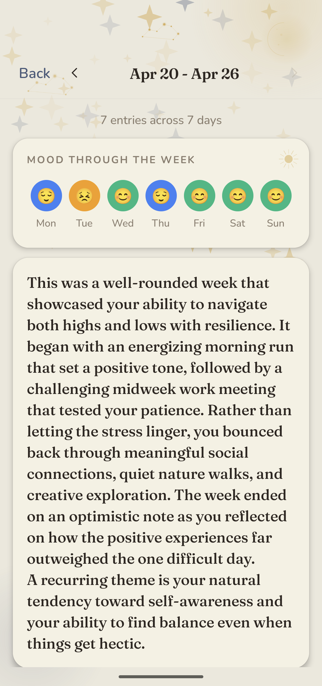
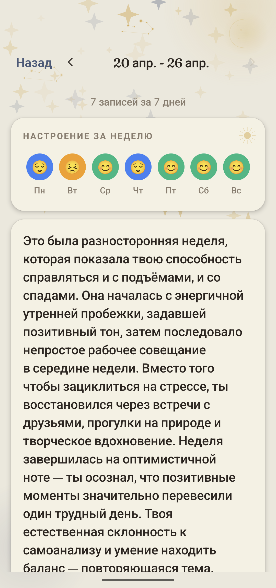

Press Kit
Logos, screenshots, and copy for journalists and partners.
50-word description (EN)
Reflecsia is a voice journaling app with deep AI insights. Speak for 30 seconds or 10 minutes; Reflecsia transcribes, finds emotions, themes, and patterns, and shows you weekly and monthly summaries of what your inner life is actually doing. Audio is deleted right after transcription. Available on Android and iOS.
150-word description (EN)
Reflecsia is a voice journaling app for people who tried text journals and quit. It removes the two reasons most journals fail — typing friction and the "is this even useful?" doubt — by asking you to talk, then doing real work on what you said.
People speak about 4× faster than they type. A 5-minute voice entry captures what would take 18 minutes to write down. Reflecsia transcribes in 99+ languages (Whisper), then runs five quiet operations on every entry: emotions on Plutchik's wheel, recurring themes, gentle CBT-aware reflection, personalised prompts, and longitudinal summaries.
Audio is deleted right after transcription. Transcripts are encrypted at rest, never used to train AI, never sold. Free for 10 entries / month; unlimited at $7.99/month or $59.99/year. Available on Google Play and (via TestFlight) the App Store.
50-word description (RU)
Reflecsia — голосовой дневник с ИИ-анализом. Говорите 30 секунд или 10 минут; Reflecsia расшифрует, найдёт эмоции, темы и паттерны и покажет недельные и месячные сводки того, что на самом деле происходит во внутренней жизни. Аудио удаляется сразу после расшифровки. Доступно на Android и iOS.
150-word description (RU)
Reflecsia — голосовой дневник для тех, кто пробовал письменные и бросал. Он убирает две главные причины, по которым дневники не приживаются — усилие на печать и сомнение «а это вообще полезно?» — позволяя говорить и делая настоящую работу над сказанным.
Люди говорят примерно в 4 раза быстрее, чем печатают. 5-минутная голосовая запись содержит столько же, сколько 18 минут письма. Reflecsia распознаёт 99+ языков (Whisper) и затем тихо запускает пять операций над каждой записью: эмоции на колесе Плутчика, повторяющиеся темы, деликатную рефлексию по подходам КПТ, персональные вопросы и лонгитюдные сводки.
Аудио удаляется сразу после расшифровки. Транскрипты зашифрованы, никогда не используются для обучения ИИ и не продаются. Бесплатно — 10 записей в месяц; безлимит — $7.99/месяц или $59.99/год. Доступно в Google Play и (через TestFlight) в App Store.
Screenshots
Three hero screenshots per language. Right-click → Save image as.






Wordmark & icon
{kind=link}
{kind=link}
{kind=link}
Quick facts
- Category: Voice journaling, AI insights, mental wellness (self-reflection — not a medical device).
- Platforms: Android (Google Play), iOS (TestFlight today; App Store public listing in review).
- Languages: EN, RU. Recording works in 99+ languages (Whisper).
- Pricing: Free for 10 entries / month. Premium $7.99/month or $59.99/year.
- Privacy: Audio deleted on transcription; transcripts encrypted, never used to train AI, never sold.
Contact
Yuri Vasilchikov — yuri.v9v@gmail.com